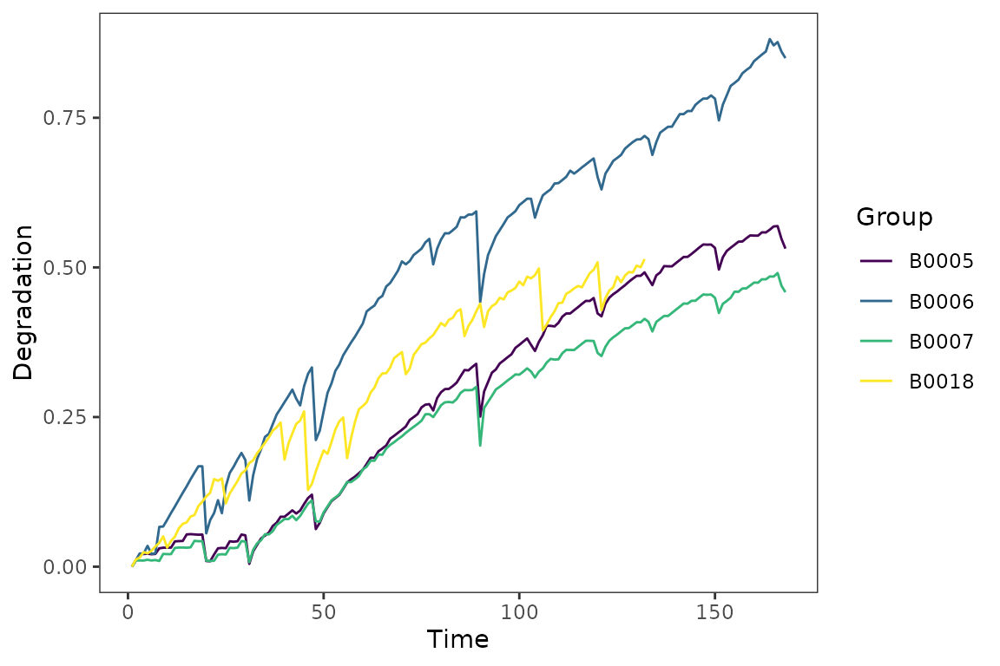
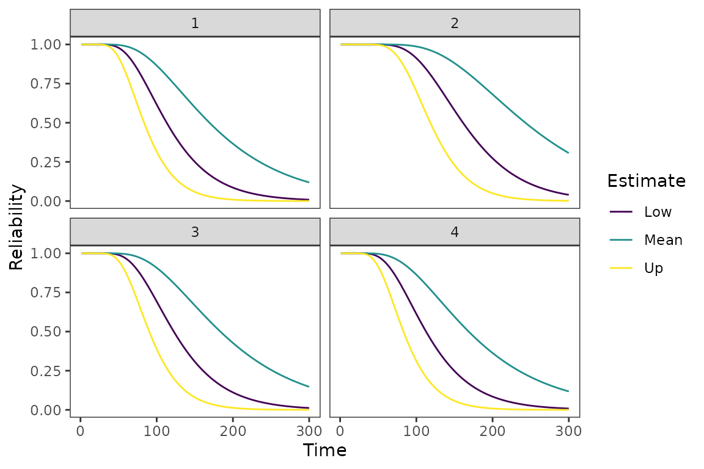
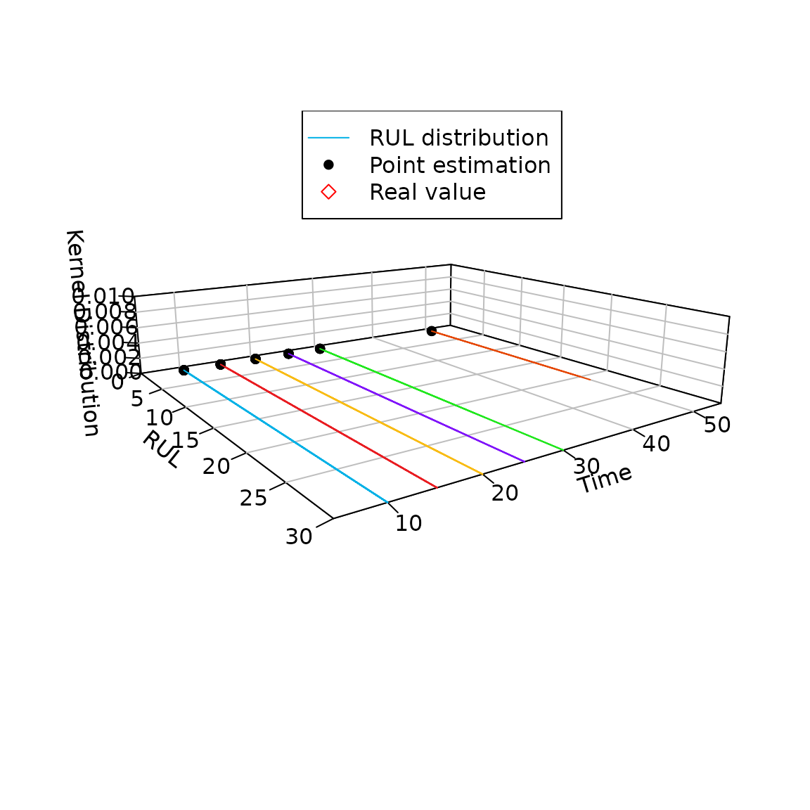

Example: lithium_battery data
We use lithium_battery data as a example.
str(lithium_battery)
#> List of 2
#> $ data :'data.frame': 168 obs. of 5 variables:
#> ..$ Time : int [1:168] 1 2 3 4 5 6 7 8 9 10 ...
#> ..$ B0005: num [1:168] 0 0.0102 0.0211 0.0212 0.0218 ...
#> ..$ B0006: num [1:168] 0 0.0102 0.022 0.0221 0.0348 ...
#> ..$ B0007: num [1:168] 0 0.0104 0.0104 0.0103 0.0116 ...
#> ..$ B0018: num [1:168] 0 0.0118 0.0154 0.0243 0.0223 ...
#> $ threshold: num [1:4] 0.456 0.635 0.491 0.455
lion_battery = list(lithium_battery[[1]])
plot_path(lion_battery) +
# scale_color_discrete() +
theme_bw() +
theme(panel.grid = element_blank()) 
Inference
For this section, we provide a tutorial for parameter estimates using
MLE and Bayesian methods. Both methods are integrated in the
sta_infer() function and just need to be set in the
"method".
MLE
# MLE ========
mle_fit = sta_infer(method = "MLE", process = "Wiener", type = "classical",
data = lion_battery)
mle_fit
#> low mean up
#> [1,] 0.0024 0.0037 0.0051
#> [2,] 0.0166 0.0176 0.0185
Reliability(t = 100, threshold = lithium_battery[[2]][1],par = mle_fit[,2],
process = "Wiener",type = "classical")
#> [1] 0.6161691
Reliability_cowplot(R_time = 1:300, sum_para = mle_fit, threshold = lithium_battery[[2]],
process = "Wiener", type = "classical")
rul2 = RUL(t = 1:100, cur_time = 30, threshold = lithium_battery[[2]][1], data = lithium_battery[[1]], par = mle_fit[,2], process = "Wiener", type = "classical")
RUL_plot(fut_time = c(10,15,20,25,30,50),
time_epoch = 1:30,
group = 1,
process = "Wiener",
type = "classical",
threshold = lithium_battery[[2]][1],
dat = lithium_battery[[1]],
zlim = c(0,0.01),
xlim = c(0,30),
para = mle_fit[,2],
real_RUL=c(NA,NA,NA,NA,NA,NA))
#> $rect
#> $rect$w
#> [1] 0.3310614
#>
#> $rect$h
#> [1] 0.1378301
#>
#> $rect$left
#> [1] -0.1409714
#>
#> $rect$top
#> [1] 0.301789
#>
#>
#> $text
#> $text$x
#> [1] -0.05568901 -0.05568901 -0.05568901
#>
#> $text$y
#> [1] 0.2673315 0.2328740 0.1984164